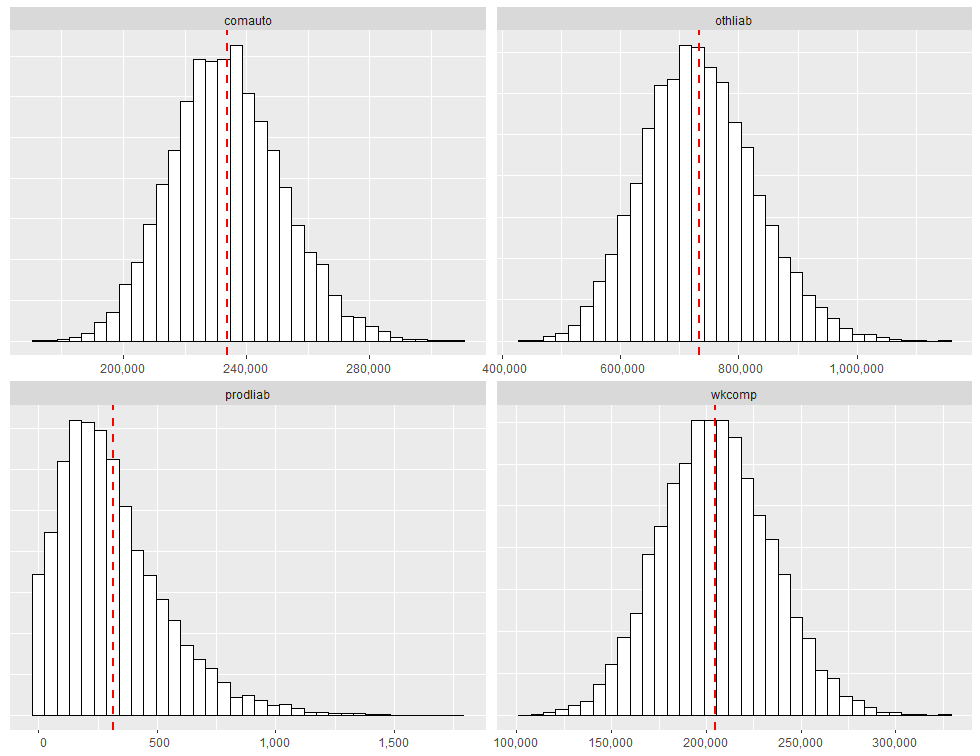
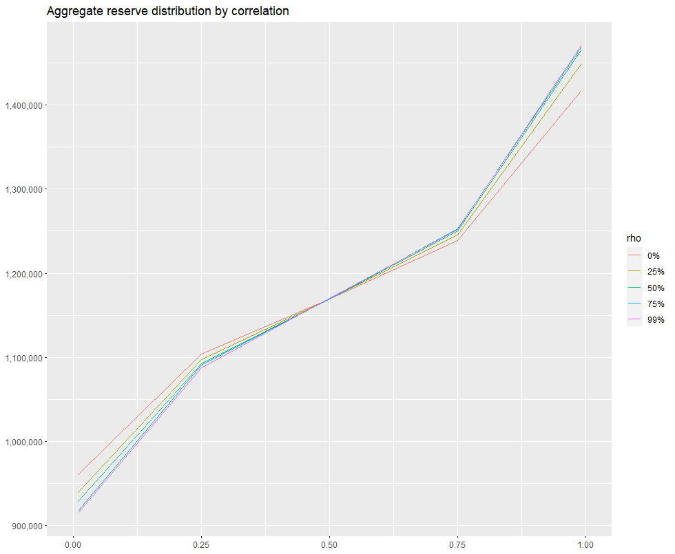
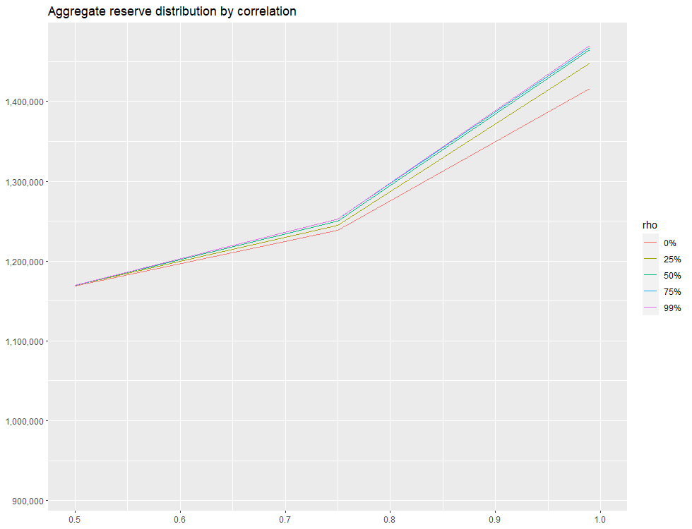

In this post, a technique to estimate total reserves accounting for correlation between lines of business is introduced. We focus on workers compensation, commercial auto, product liability and other liability data sourced from the CAS Loss Reserves Database. We’ll demonstrate how to account for correlation between lines, and show how changes to the correlation assumption affects the total reserve estimate.
The CAS Loss Reserves Database represents a set of triangles intended for use in claims reserving studies. The data includes major personal and commercial lines of business from U.S. property casualty insurers. The claims data comes from Schedule P in the National Association of Insurance Commissioners (NAIC) database. NAIC Schedule P contains information on claims for major personal and commercial lines for all P&C insurers that write business in US.
The data can be downloaded from the CAS website directly using data.table’s fread. We perform some preprocessing to normalize column names and assign like columns the same name in each table.
library("data.table")
library("foreach")
library("ChainLadder")
library("ggplot2")
DF1 = fread("https://www.casact.org/sites/default/files/2021-04/wkcomp_pos.csv") # workers compensation
DF2 = fread("https://www.casact.org/sites/default/files/2021-04/comauto_pos.csv") # commercial auto
DF3 = fread("https://www.casact.org/sites/default/files/2021-04/prodliab_pos.csv") # product liability
DF4 = fread("https://www.casact.org/sites/default/files/2021-04/othliab_pos.csv") # other liability
names(DF1) = tolower(names(DF1))
names(DF2) = tolower(names(DF2))
names(DF3) = tolower(names(DF3))
names(DF4) = tolower(names(DF4))
setnames(
DF1, c("incurloss_d", "bulkloss_d", "accidentyear", "developmentlag"),
c("incurloss", "bulkloss", "origin", "dev")
)
setnames(
DF2, c("incurloss_c", "bulkloss_c", "accidentyear", "developmentlag"),
c("incurloss", "bulkloss", "origin", "dev")
)
setnames(
DF3, c("incurloss_r1", "bulkloss_r1", "accidentyear", "developmentlag"),
c("incurloss", "bulkloss", "origin", "dev")
)
setnames(
DF4, c("incurloss_h1", "bulkloss_h1", "accidentyear", "developmentlag"),
c("incurloss", "bulkloss", "origin", "dev")
)
dfList = list(wkcomp=DF1, comauto=DF2, prodliab=DF3, othliab=DF4) Each dataset contains loss data indexed by grcode, which is a company id. We need to find a company with losses in DF1, DF2, DF3 and DF4. This can be accomplished with the following:
grcodes = Reduce(
function(v1, v2) intersect(v1, v2),
lapply(dfList, function(DF) unique(DF[,grcode]))
)
grnamesDF = unique(
DF1[grcode %in% grcodes, .(grcode, grname)]
)
setorderv(grnamesDF, c("grcode"), c(1))Which yields:
grcode grname
1: 337 California Cas Grp
2: 715 West Bend Mut Ins Grp
3: 1066 Island Ins Cos Grp
4: 1538 Farmers Automobile Grp
5: 1767 State Farm Mut Grp
6: 2143 Farmers Alliance Mut & Affiliates
7: 5185 Grinnell Mut Grp
8: 7080 New Jersey Manufacturers Grp
9: 9466 Lumber Ins Cos
10: 10048 Hyundai Marine & Fire Ins Co Ltd
11: 11126 Yasuda Fire & Marine Ins Co Of Amer
12: 13439 Partners Mut Ins Co
13: 13528 Brotherhood Mut Ins Co
14: 13587 Chicago Mut Ins Co
15: 14044 Goodville Mut Cas Co
16: 14257 IMT Ins Co Mut
17: 14370 Lebanon Mut Ins Co
18: 14508 Michigan Millers Mut Ins Co
19: 15024 Preferred Mut Ins Co
20: 18791 Virginia Mut Ins Co
21: 23663 National American Ins Co
22: 26433 Harco Natl Ins Co
23: 28258 Continental Natl Ind Co
24: 35408 Sirius Amer Ins Co
25: 38300 Samsung Fire & Marine Ins Co Ltd
26: 38733 Alaska Nat Ins Co
27: 44091 Dowa Fire & Marine Ins Co Ltd Us Br
grcode grnameLet’s go with 1767, which represents State Farm. In the next code block, we subset each data.table to only those records with grcode=="1767", then create runoff triangles for each line of business:
GRCODE = 1767
grList = lapply(dfList, function(DF) DF[grcode==GRCODE,])
triData = foreach(
ii=1:length(grList), .inorder=TRUE, .errorhandling="stop",
.final=function(ll) setNames(ll, names(grList))
) %do% {
currLOB = names(grList)[[ii]]
DFInit = grList[[ii]]
DF = DFInit[dev<=max(origin) - origin + 1,]
DF[,value:=incurloss - bulkloss]
as.triangle(DF[,.(origin, dev, value)])
}Triangles for each lob are presented below:
> triData
$wkcomp
dev
origin 1 2 3 4 5 6 7 8 9 10
1988 50758 94150 106804 113733 120148 123986 127650 128622 129791 130625
1989 65423 110204 131509 140383 147011 150266 152264 155017 155979 NA
1990 68719 141501 165694 181789 189149 194315 196897 201780 NA NA
1991 82409 165813 199016 213698 222994 229774 232413 NA NA NA
1992 97138 183451 208163 220275 227404 234320 NA NA NA NA
1993 106508 167688 195533 212777 220063 NA NA NA NA NA
1994 93736 141067 160848 173457 NA NA NA NA NA NA
1995 81309 116739 135447 NA NA NA NA NA NA NA
1996 66073 92365 NA NA NA NA NA NA NA NA
1997 56003 NA NA NA NA NA NA NA NA NA
$prodliab
dev
origin 1 2 3 4 5 6 7 8 9 10
1988 696 737 881 1002 1379 1451 1741 1814 1818 1850
1989 428 351 617 718 761 788 797 802 804 NA
1990 57 77 92 135 197 235 250 263 NA NA
1991 23 121 140 141 172 189 190 NA NA NA
1992 48 109 101 107 131 130 NA NA NA NA
1993 119 133 150 211 278 NA NA NA NA NA
1994 21 60 59 100 NA NA NA NA NA NA
1995 57 53 54 NA NA NA NA NA NA NA
1996 10 11 NA NA NA NA NA NA NA NA
1997 20 NA NA NA NA NA NA NA NA NA
$comauto
dev
origin 1 2 3 4 5 6 7 8 9 10
1988 110231 152848 168137 180062 186150 188142 189352 191307 191867 194000
1989 121678 158218 176744 188127 192966 196104 199178 199655 200949 NA
1990 123376 175239 201955 214113 219988 223308 225841 226373 NA NA
1991 117457 162601 183338 198607 203398 205870 206957 NA NA NA
1992 124611 166788 189771 201033 206826 212361 NA NA NA NA
1993 137902 185952 209357 220428 226541 NA NA NA NA NA
1994 150582 194528 216205 231077 NA NA NA NA NA NA
1995 150511 194730 215037 NA NA NA NA NA NA NA
1996 142301 184283 NA NA NA NA NA NA NA NA
1997 143970 NA NA NA NA NA NA NA NA NA
$othliab
dev
origin 1 2 3 4 5 6 7 8 9 10
1988 22417 58806 77536 103003 112976 120070 124641 126954 127444 128036
1989 24740 55381 76543 97608 113777 124341 126171 128952 132618 NA
1990 19432 63891 94243 119678 124938 129990 133964 133949 NA NA
1991 25821 84453 136275 159204 169820 172446 181744 NA NA NA
1992 38377 98045 138205 154554 171701 177467 NA NA NA NA
1993 53001 150478 196273 224523 232681 NA NA NA NA NA
1994 50848 127767 187297 233255 NA NA NA NA NA NA
1995 59140 149648 215701 NA NA NA NA NA NA NA
1996 71637 159561 NA NA NA NA NA NA NA NA
1997 82937 NA NA NA NA NA NA NA NA NANext, for each triangle call the BootChainLadder function (available in the ChainLadder library), running 5000 iterations and retaining only the total IBNR samples (discarding IBNR simulations by accident year). We replace simulated values less than or equal to 1 with 1:
ibnrSimsDF = foreach(
ii=1:length(triData), .inorder=TRUE, .errorhandling="stop",
.combine="cbind.data.frame", .final=setDT
) %do% {
tri = triData[[ii]]
bcl = BootChainLadder(tri, R=5000, process.distr="gamma")
lobSims = bcl$IBNR.Totals
lobSims[lobSims<1] = 1
lobSims
}
# Set names of each column in simsDataDF to associated LOB.
names(ibnrSimsDF) = names(triData)Inspecting ibnrSimsDF yields:
> head(ibnrSimsDF)
wkcomp prodliab comauto othliab
1: 213282.5 309.9531 207524.1 836339.0
2: 185281.3 453.1356 228032.9 876116.3
3: 178462.7 263.7076 246759.9 633045.5
4: 204928.1 169.7184 246953.0 641145.2
5: 168382.3 408.6908 213764.4 717701.9
6: 158486.8 194.0509 227606.5 711641.2ibnrSimsDF contains 5000 rows, with the value in each row representing the total simulated reserve need across all accident years for the lob in question. It is possible to produce histograms of the simulated total IBNR using ggplot2. The code that follows generates a faceted quad-plot of the sampling distribution of total IBNR for each lob, with a vertical dashed red line marking the location of the distribution mean. We first transform ibnrSimsDF into a ggplot2-compatible format (which is ggDF):
# Create faceted quad-plot representing sampling distribution of total IBNR.
ggDF = data.table::melt(
ibnrSimsDF, measure.vars=names(ibnrSimsDF), value.name="ibnr",
variable.name="lob", variable.factor=FALSE
)
# Add mean.ibnr for huistogram overlay.
ggDF[,mean.ibnr:=mean(ibnr, na.rm=TRUE), by="lob"]
ggplot(ggDF, aes(x=ibnr)) +
geom_histogram(bins=35, color="black", fill="white") +
geom_vline(
aes(xintercept=mean.ibnr), color="red", linetype="dashed", size=1
) +
theme(
axis.title.y=element_blank(), axis.text.y=element_blank(),
axis.ticks.y=element_blank(), axis.title.x=element_blank()
) +
scale_x_continuous(
labels=function(x) format(x, big.mark=",", scientific=FALSE)
) +
facet_wrap(~lob, scales="free")Running the code above produces:

Quantifying Total Reserve Variability
If all we are trying to do is determine the expected value of the reserve run-off, we can calculate the expected value for each lob separately and add all the expectations together. However, if we are trying to quantify a value other than the mean (such as the 75th percentile), we cannot simply sum across lines of business. If we do so, we will overstate the aggregate reserve need. The only time the sum of each lob’s 75th percentile would be appropriate for the aggregate reserve indication is when all lines are fully correlated with each other, which is highly unlikely.
To account for correlation between lobs, we rely on the rank correlation methodology described in Two Approaches to Calculating Correlated Reserve Indications Across Multiple Lines of Business. The methodology is carried out through a two-step process:
In the first step, a stochastic reserving technique is used to generate N possible reserve runoffs from each data triangle being analyzed (this is what we have in ibnrSimsDF). In the second step, a correlation matrix is specified, where individual elements of the correlation matrix describe the association between different pairs of lobs. With the correlation matrix \(\Sigma\), carry out the following steps:
Compute the Cholesky decomposition of \(\Sigma\), that is, find the unique lower triangular matrix \(A\) such that \(AA^{T} = \Sigma\).
Compute \(Z = (z_{1}, \dots, z_{n})^{T}\), a vector whose components are \(n\) independent standard normal variates (for our example, \(n=5000\).)
Let \(X = \mu + AZ\). Since \(Z\) represents independent draws from the standard normal distribution, the value of the mean vector \(\mu\) is 0. Therefore correlated random draws are obtained by matrix multiplying \(A\) with \(Z\).
For the correlation matrix, we’ll initially assume no correlation between lobs (all off-diagonal elements=0). Later
we’ll compare estimated reserve need as a function of changing correlation.
The correlation matrix can be initialized as follows:
sigma = matrix(
c(c(1, 0, 0, 0),
c(0, 1, 0, 0),
c(0, 0, 1, 0),
c(0, 0, 0, 1)),
nrow=4,
dimnames=list(names(ibnrSimsDF), names(ibnrSimsDF))
)Which looks like the following:
wkcomp prodliab comauto othliab
wkcomp 1 0 0 0
prodliab 0 1 0 0
comauto 0 0 1 0
othliab 0 0 0 1The next code block implements steps 1-3:
A = t(chol(sigma))
Z = matrix(rnorm(ncol(A) * 5000), nrow=5000, ncol=ncol(A))
X = Z %*% AChecking out the first few records of X yields:
> head(X)
wkcomp prodliab comauto othliab
[1,] 0.2256225 0.66492692 0.8239846 -1.5497317
[2,] 0.1101583 0.60652201 -0.9572046 -0.5200923
[3,] -0.5961369 0.13732270 -1.5355783 1.0622470
[4,] 0.6863108 -1.02719480 0.1086142 -0.4941367
[5,] 1.3918400 0.09805293 0.3412182 -0.1409186
[6,] 0.5547157 1.57012447 0.1263973 0.7135559For each column in X, we need to obtain the rank of each correlated random draw. This can be accomplished by running:
rankX = foreach(ii=1:ncol(X), .combine="cbind") %do% { rank(X[,ii]) }
colnames(rankX) = colnames(sigma)Inspecting the first few records from rankX yields:
> head(rankX)
wkcomp prodliab comauto othliab
[1,] 2971 3758 3975 293
[2,] 2751 3658 856 1493
[3,] 1393 2759 288 4335
[4,] 3785 782 2746 1544
[5,] 4619 2684 3178 2221
[6,] 3569 4687 2784 3866To prepare for the rank correlation step, we need to order the total IBNR simulations from smallest to largest within each lob column:
# Order total bootstrapped ibnr samples from smallest to largest.
orderedSimsDF = foreach(
ii=1:length(names(ibnrSimsDF)), .combine="cbind.data.frame",
.final=setDT
) %do% {
currLOB = names(ibnrSimsDF)[[ii]]
sort(ibnrSimsDF[[currLOB]])
}
names(orderedSimsDF) = names(ibnrSimsDF)Then for each rank in rankX, we lookup the corresponding position-wise element from orderedSimsDF. This ensures that the rank order correlations between lobs are the same as the correlations imposed on the random normal samples. For example, the first row of rankX is:
wkcomp prodliab comauto othliab
2971 3758 3975 293 Then using orderedSimsDF, we lookup the 2971st element under wkcomp, the 3758th element under prodliab, the 3975th element under comauto and the 293rd element under othliab. This can be accomplished as follows:
# Get correlated IBNR samples.
corrIBNR = foreach(
ii=1:length(names(orderedSimsDF)), .combine="cbind"
) %do% {
currLOB = names(orderedSimsDF)[[ii]]
lobIndx = rankR[,currLOB]
orderedSimsDF[lobIndx, get(currLOB)]
}
colnames(corrIBNR) = names(orderedSimsDF)Finally, we sum the correlated samples across lobs, resulting in a vector of values representing the aggregate reserve distribution:
totalIBNR = apply(corrIBNR, MARGIN=1, sum)Percentiles of the aggregate IBNR distribution can be obtained by calling:
> quantile(totalIBNR, c(.01, .25, .50, .75, .99))
1% 25% 50% 75% 99%
962340.6 1107900.3 1171348.8 1241553.0 1428743.0 Comparing different values of \(\Sigma\)
We’ve re-run the procedure described in the previous section for 5 different correlation matrices, assuming 0, .25, .50, .75 and .99 off-diagonal correlation, and combined the results into a single data.table qqDF. I then estimated the 1st, 25th, 50th, 75th and 99th percentile of each aggregate reserve distribution and created an exhibit comparing the distribution of each as a function of percentile. The code used to create the exhibit is given below:
# ------------------------------------------------------------------------
# Assume qqDF contains 1st, 25th, 50th, 75th and 99th percentile of the
# aggregate IBNR distribution for off-diagonal correlation values of
# 0, .25, .50, .75 and .99. The first few records of qqDF look like:
#
# rho x y
# 1: 0% 0.00 871243.8
# 2: 0% 0.25 1107900.3
# 3: 0% 0.50 1171348.8
# 4: 0% 0.75 1241553.0
# 5: 0% 0.99 1428743.0
#
# ------------------------------------------------------------------------
ggplot(qqDF, aes(x=x, y=y)) + geom_line(aes(color=rho), size=.5) +
scale_y_continuous(
labels=function(x) format(x, big.mark=",", scientific=FALSE)
) +
theme(
axis.title.y=element_blank(), axis.title.x=element_blank()
) + xlim(0, 1) +
ggtitle("Aggregate reserve distribution by off-diagonal correlation")Which produces:

By setting xlim(.50, 1), we can zoom in on the right-hand side of the distribution:

We see that around .50 mark on the x-axis, there is essntially no difference between 0% and 25% off-diagonal correlation assumption. However, as we move right along the x-axis, there’s a greater and greater discrepancy. when x=.99, the difference in the estimated total needed reserve is ~50,000, which represents approximately a 5% difference.
A few take-aways:
If the goal is to determine the expected value of the reserve run-off, the expected value for each lob can be computed separately then added together.
If the aim is to quantify a value other than the mean such as the 75th percentile, we cannot simply sum across the lines of business, as this is akin to assuming full correlation between lines of business, which is unlikely and will overstate the aggregate reserve need.
Off-diagonal correlation values do not need to be the same, but the matrix does need to be symmetric (identical values at \(m_{i,j}\) and \(m_{j,i}\)).
See Correlations between insurance lines of business: An illusion or a real phenomenon? Some methodological considerations for further context.